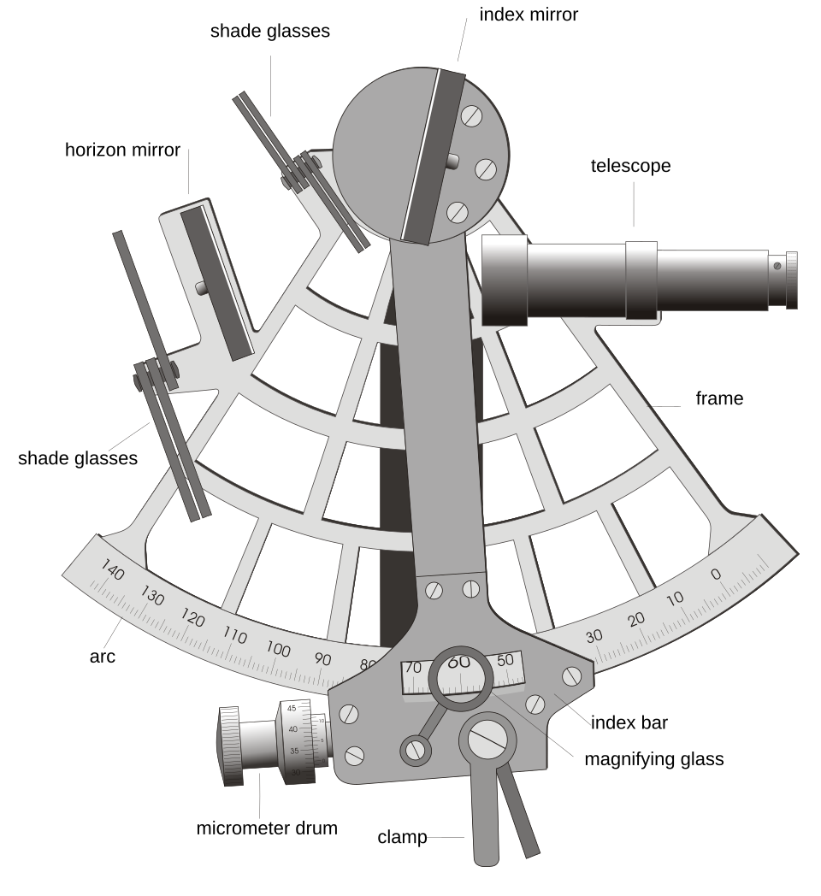
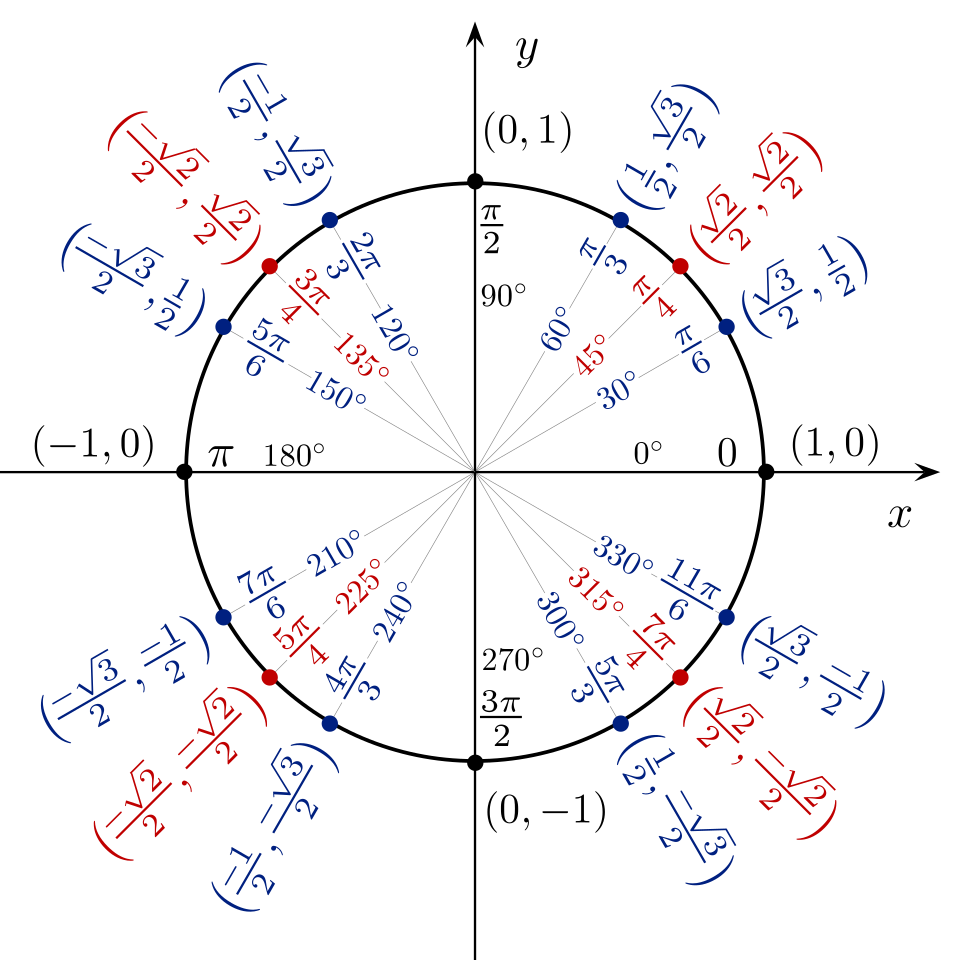

sin 30° = 0.5
In a 3-4-5 right triangle: sin A = 3/5, cos A = 4/5, tan A = 3/4
Kite height: 0.5 × 10 m of string = 5 m up in the air
Those three lines are trigonometry (say "trig-uh-NAH-muh-tree" — or just "trig") in action. The first is a fact about one very special angle. The second is three fractions that, together, describe an angle completely — its secret fingerprint. The third is the payoff: using one of those fractions to measure something you could never reach with a ruler — the height of a kite flying overhead. Right now those lines might look a little mysterious. That's okay! By the end of this lesson, you'll be able to do all three — and you'll know exactly why each one works.
Why do people care? Because trig lets you measure the unmeasurable. How tall is that tree, that building, that mountain? You can't climb it with a tape measure — but measure a shadow and an angle, and trig tells you the answer. Video games use trig to aim jumps and launch rockets. Engineers use it for every ramp and roof. Pilots and sailors use it to navigate. Astronomers even use it to find distances to stars. And the wildest part? The whole subject rests on three fractions a 6th grader can compute: sine, cosine, and tangent.
In this lesson, you will:
- 1.Learn the parts of a right triangle — and meet the mighty hypotenuse
- 2.Learn to spot the opposite and adjacent sides — it's all about where you stand
- 3.Learn the big idea: same angle, same ratio — forever and ever
- 4.Learn the three famous ratios: sine, cosine, and tangent (SOH CAH TOA!)
- 5.Learn the Pythagorean theorem — find a missing side, then do trig
- 6.Learn the special angles: 30°, 45°, and 60° — with a cheat sheet to keep
- 7.Learn to measure the world: kites, ladders, ramps, and shadows
- 8.Learn the common mistakes so you never make them
- 9.Practice with 100 problems at the end!
How to use this lesson: Read the sections in order. Each section starts with the key idea you'll learn in it. Take your time, and try every "Your Turn" box with a pencil and paper. Drawing little triangles makes everything easier — sketch every problem! Ready? Let's go!
📸 Pictures

A sextant measures the angle between the Sun or a star and the horizon. Sailors used it with trigonometry to work out where they were at sea! See source ↓

The unit circle with the special angles. The cosine and sine of each angle are just the x and y coordinates of its point on the circle! See source ↓
🗺️ Your lesson map
Right Triangles — Meet the Mighty Hypotenuse 🧩Lesson 2
Opposite and Adjacent — It's All About Where You Stand 🎯Lesson 3
The Big Idea — Same Angle, Same Ratio 🔍Lesson 4
Sine, Cosine, Tangent — SOH CAH TOA ⚡Lesson 5
The Pythagorean Theorem — Find the Missing Side 🌟Lesson 6
The Special Angles — 30°, 45°, 60° 🛠️Lesson 7
Measuring the World — Kites, Ladders, Ramps, Shadows ⚠️Lesson 8
Watch Out! Common Mistakes 🧠Lesson 9
Review — The Big Picture 🏋️Practice Problems
100 problems to try 🏆Quiz
Test yourself: new questions every time!
📚 Picture Sources
- Picture 1 · Marine sextant. By Joaquim Alves Gaspar. CC BY 2.5. From Wikimedia Commons: https://commons.wikimedia.org/wiki/File:Marine_sextant.svg
- Picture 2 · Unit circle angles color. By Jim.belk. Public domain. From Wikimedia Commons: https://commons.wikimedia.org/wiki/File:Unit_circle_angles_color.svg